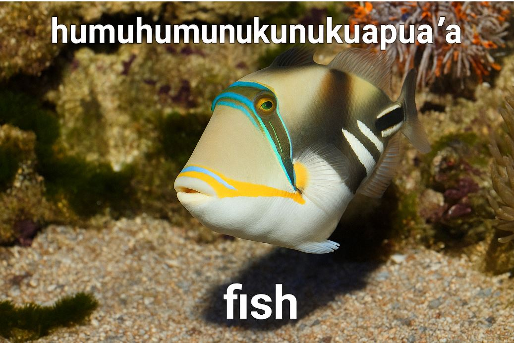
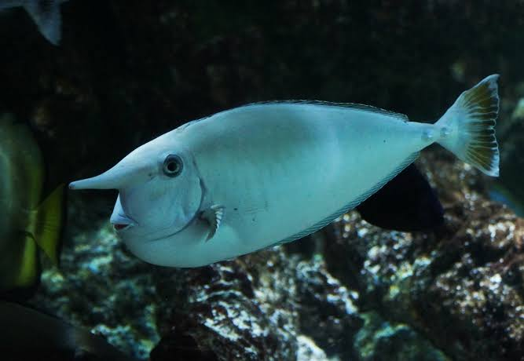
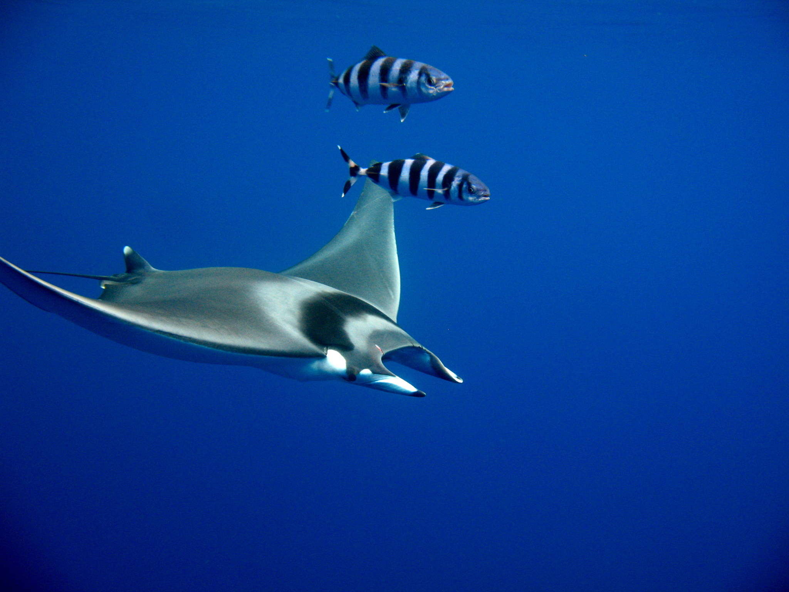
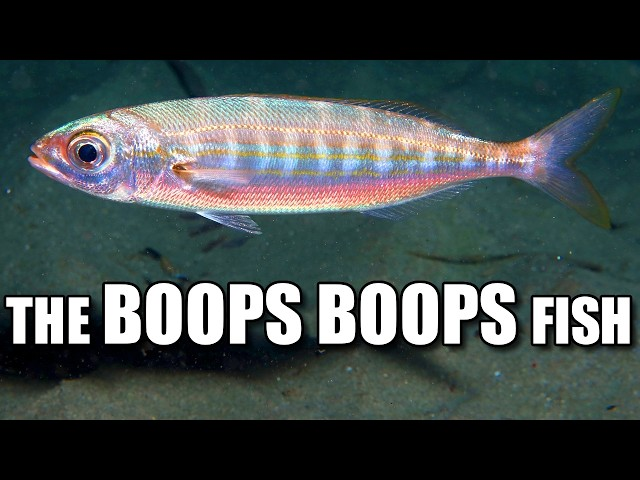

Humuhumunukunukuāpuaʻa

Humuhumunukunukuāpuaʻa is the Hawaiian name of the reef
triggerfish. It is also known as the Picasso triggerfish
because of its unusual and colorful patterns.
Its incredibly long name comes from the Hawaiian language.
The name is often translated as something like
"triggerfish with a snout like a pig."
It is the state fish of Hawaii.
Whitemargin Unicornfish

The whitemargin unicornfish is a tropical reef fish named
after the horn-like projection found on its forehead.
Despite its strange appearance, it is a herbivore and
mainly feeds on algae growing on coral reefs.
Its long, pointed body and horn-like structure make it
look surprisingly similar to a creature from a fantasy game.
Devil Fish

The name "devil fish" is commonly associated with large
rays, especially the giant devil ray.
Despite its intimidating name, devil rays are generally
filter feeders. They use their large mouths to collect
plankton and other tiny organisms from the water.
Their enormous fins can make them look like they are
flying through the ocean.
Boops boops

Boops boops is a real species of fish found in the eastern
Atlantic Ocean and the Mediterranean Sea.
Its scientific name is one of the funniest-sounding names
in the animal kingdom: Boops boops.
The name comes from the Greek word "boōps", which refers
to its large eyes.